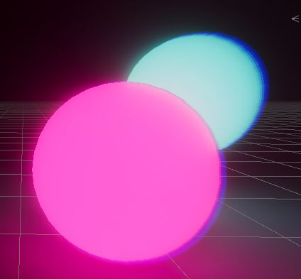

Dans Unity, le post-processing sert à embellir l'image finale de notre projet. Plusieurs effets sont disponibles et peuvent être appliqués à votre caméra. Le post-processing doit être appliqué sur un volume, c'est-à-dire un espace en particulier. Par défaut, dans les scènes HDRP, l'objet Sky and fog volume est un volume qui peut contenir des effets de post-processing qui s'appliqueront sur toute votre scène. Il peut être intéressant d'animer le post-processing ou de l'appliquer uniquement dans certaines zones.
Habituellement, on crée un volume global pour que les effets s'appliquent sur toute la scène. Pour se faire, clic droit dans la hiérarchie, volume, global volume. Dans les scènes HDRP, on peut aussi directement ajouter les effets sur le Sky and fog volume. Si vous souhaitez appliquer un effet seulement sur une zone spécifique de votre scène, vous pouvez utilisez les volumes en forme de boîte ou de sphère. Pour les créer, clic droit dans la hiérarchie, volume, sphere ou box volume. Ajustez ensuite la taille de la zone de votre effet en redimmensionnant l'objet ou son collider.
Une fois votre volume créé, vous devez lui créer un objet Profile. Pour ce faire, ouvrez le volume dans l'inspecteur, puis appuyez sur New dans le paramètre Profile de la composante volume.
Une fois votre volume créé, vous pouvez ajouter des effets sur celui-ci. Ils seront alors appliqués à la zone choisie (Globale ou spécifique). Pour ajouter un effet, cliquer sur Add Override sur la composante volume. Voici les différents effets auxquels vous avez accès:
Cet effet sert à foncer les zones qui ne reçoivent pas de lumière directe.
Cet effet crée des halos autour des objets lumineux. Cela donne l'impression que les objets émettent de la lumière.
Le channel mixer est un effet qui vous permet d'ajuster l'apparence des canaux de couleur de votre scène. Ainsi, vous pouvez ajuster la couleur de tous les rouges en même temps pour modifier leur teinte.
Cet effet joue sur le pourtour de vos objets, il permet de disperser les couleurs sur les côtés. On remarque bien cet effet lorsque notre objet est en mouvement.
Cet effet vous permet de jouer avec quelques paramètres qui affectent les couleurs, notamment, l'exposition, le contraste, la saturation. De plus, vous pouvez ajouter un filtre de couleur par-dessus votre scène ou encore modifier le hue de tous vos éléments.
Cet effet vous permet de jouer sur les courbes de couleur de votre scène. Vous pouvez accentuer ou diminuer l'intensité par canal de couleur.
Présent par défaut sur l'asset Sky and Fog volume, ce paramètre permet de régler l'exposition de votre scène.
Cet effet vous permet d'ajouter de la brume à votre scène. Vous pouvez modifier l'apparence de la brume dans ses paramètres. Il est présent par défaut dans le Sky and Fog volume.
Cet effet crée une profondeur de champ dans votre scène. Ainsi, selon la distance entre vous et les objets, ils apparaîtront flous.
Cet effet permet de créer un visuel de vieux film, il ajoute du grain par-dessus votre image. Il y a quelques paramètres par-défaut pour vous aider à ajuster la taille du grain. N'oubliez pas d'augmenter l'intensité pour le voir.
Cette composante devra être ajoutée, si vous choisissez gradient sky dans le sky type de l'effet visual environment. Cet effet vous permet de choisir l'allure de votre ciel en créant un dégradé. Il est plus simple que le physically based sky.
Cet effet déforme votre image comme le ferait une lentille. Vous pouvez ajuster la courbe de votre lentille.
Cet effet vous permet aussi d'ajuster les couleurs de votre scène, cette fois avec des roues de couleur.
Le flou de mouvement floutte légèrement l'image selon la direction du mouvement de la caméra. Attention, cela peut créer de la motion sickness.
Cet effet est l'inverse de la distorsion de la lentille. Il sert à corriger la distorsion dans les bords de votre image lorsque le champ de vue est grand.
Cette composante est présente, si vous choisissez physically based sky dans le sky type de l'effet visual environment. Plutôt que de créer votre matériel skybox, en hdrp vous pouvez utiliser cet effet pour modifier la couleur du ciel et du sol de votre scène.
Cet effet permet de jouer avec l'intensité et la couleur des ombres, tons moyens et tons clairs séparément. Chaque élément peut être modifié avec des roues de couleur.
Cet effet est similaire à Shadow, Midtone, Highlight, il permet de modifier la couleur des ombres ou des zones claires et de faire la balance entre les deux.
Des paramètres prédéfinis sont disponibles pour cet effet, ils permettent de modifier les couleurs de votre image pour qu'elles soient HDR.
La vignette vous permet d'ombrager les coins de votre image. Elle met l'emphase sur ce qui est au centre du point de vue de votre joueur.
Présent par défaut sur le sky and fog volume, cet effet gère plusieurs des sous-composantes. Le paramètre Sky type permet de déterminer quel type de ciel vous désirez. Le Physically Based sky est une composante plus complexe que le gradient. Le paramètre background clouds permet d'ajouter des nuages à votre scène. Ambientn mode détermine si le ciel est pris en compte (dynamic) ou non (static) dans l'éclairage et la teinte de la scène. Des paramètres vous permettent de gérer le vent dans votre scène.
La balance des blancs permet d'ajuster les zones blanches de votre image pour qu'elles aient l'air blanches malgré la lumière. Vous pouvez également ajuster ce paramètre directement sur vos lumières.